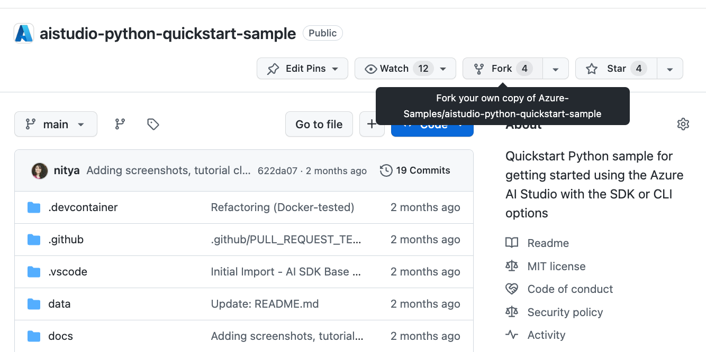
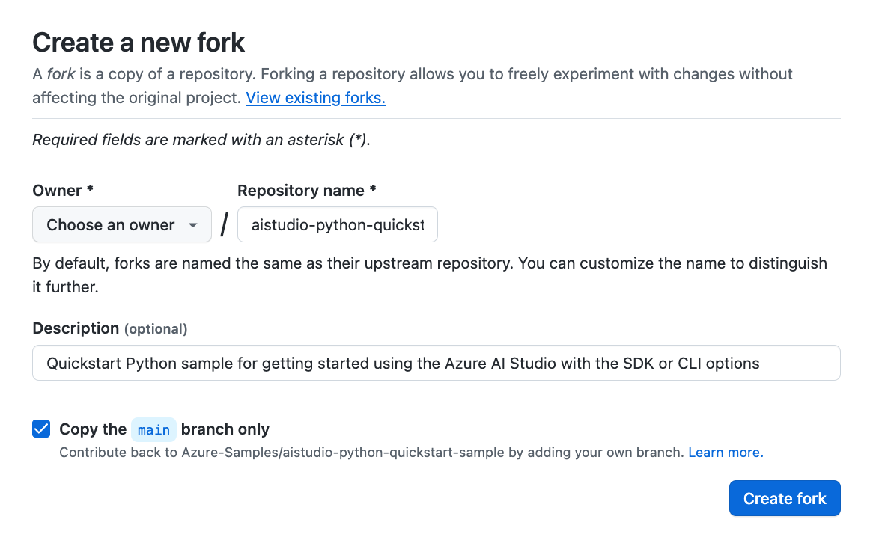
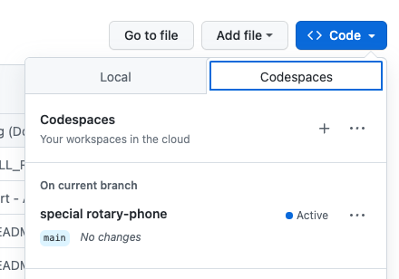
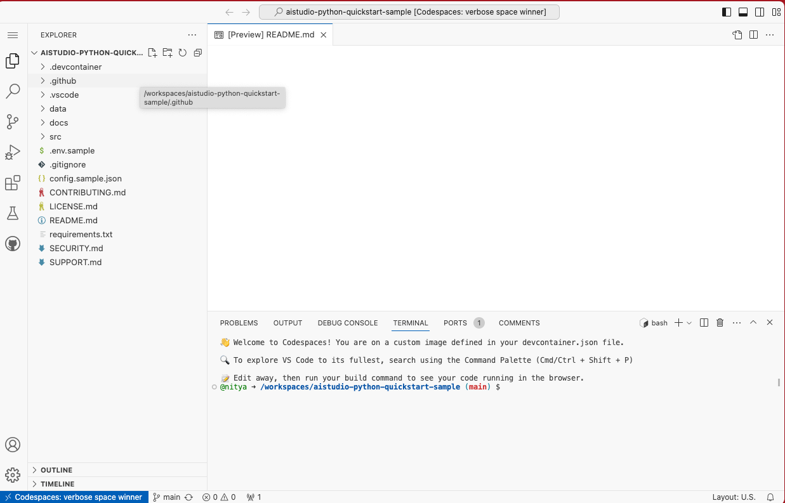
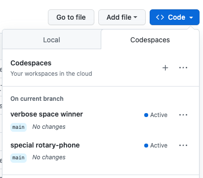
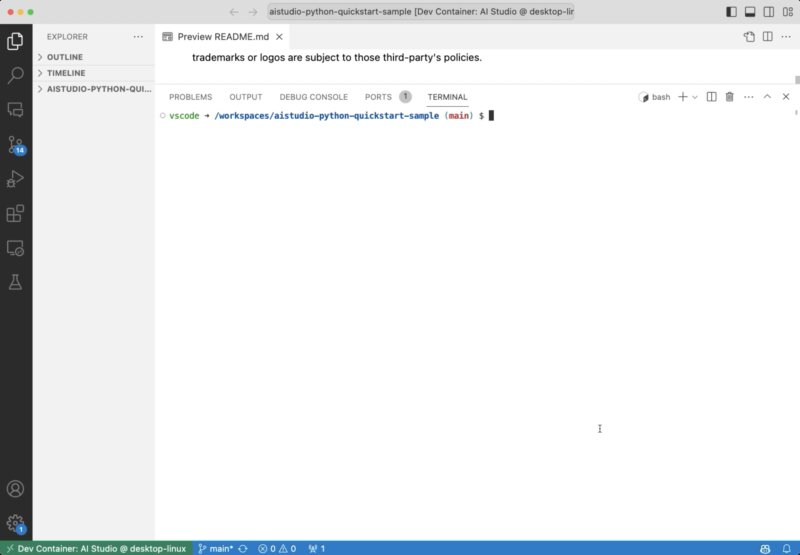
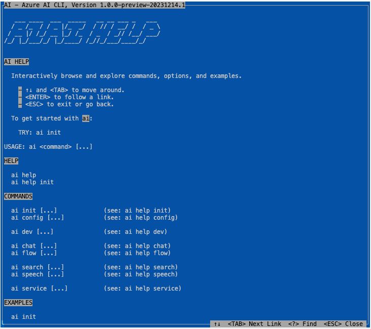

03 | Dev Environment
Azure AI Studio is currently In Preview
Preview versions are provided without a service level agreement, and they are not recommended for production workloads. Certain features might not be supported or might have constrained capabilities. For more information, see Supplemental Terms of Use for Microsoft Azure Previews.
For this project, we need a development environment with the following:
- A Python 3.x runtime (3.10 or higher) with all requirements.
- A Visual Studio Code editor with all required extensions.
- Azure AI CLI tooling (binary) for latest stable version.
3.1 Fork The Sample
Before you begin, we recommend you fork the sample repo into your own profile on GitHub. This is useful for two reasons:
- You keep a snapshot of the sample at this point in time, even as the main sample evolves. This lets you have a stable and familiar version that corresponds to your walkthrough,
- You can make changes to the code if you want to experiment on this later. For example, you may want to try adding your own data, or exploring new features.
To fork the repo:
-
Visit Azure-Samples/aistudio-python-quickstart-sample. Click the Fork button:

-
Click Create Fork, select owner profile, leave t default options unchanged.

Congratulations 🎉 - You have forked the sample to your profile!
3.2 Pick a Setup Option
To setup your development environment, use one of these three options:
- Pre-built, cloud VM - using GitHub Codespaces.
- Pre-built, local VM - using Docker Desktop.
- Manual, local OS - using your preferred environment.
The repository is instrumented with a dev container configuration that creates a pre-built development environment in a Docker container, ready for your use. The first two options allow you to run this container - either in the cloud or on your local device. The final option lets you control the entire setup yourself, in your preferred environment or OS.
We've documented the three options below from least-effort to most, for setup. Pick one.
Recommended Option: Pre-built Container On GitHub Codespaces!
The Azure AI Studio preview and related Azure AI SDK and Azure AI CLI are likely to evolve quickly to reflect changes and updates. We strongly recommend using the pre-built development environment option to minimize your effort in maintaining your local environment, to stay up-to-date with these changes.
1 | Pre-built Container (Cloud)
Complete this section if you want to use the prebuilt option with GitHub Codespaces.
-
To get started, launch GitHub Codespaces by clicking the "Code" button in the repository UI, selecting the "Codespaces" tab - and then creating a new codespace. Previously created codespaces will be listed if active or available for resume. 
-
The first time you launch the codespace, you will see a new tab open with something like this indicating that the Codespace (dev container) is being built. Clicking the
Show Logsbutton in the output console will produce the detailed output shown below.
-
Once the build completes, you should see the tab refresh to show a Visual Studio Code editor in the browser, as shown below. The blue bar at the bottom left of the screen should show you the name of the running Github Codespaces instance. 
-
If you refresh the repository page and view that 'Codespaces' tab again, you should see the same name show up as an active codespace for that repository. 
Congratulations 🎉 - Your Codespaces is Ready!
2 | Pre-built Container (Device)
Complete this section if you want to use the prebuilt option with Docker Desktop on your local device. This gives you the benefits of a pre-built environment but without using up your GitHub Codespaces quota.
- Install Docker Desktop. Follow these instructions to install Docker Desktop on your device.
-
Clone the forked repository to your local device, then open the repository in Visual Studio Code. Follow these instructions open the folder in a container in Docker Desktop. The container takes a few minutes to build. You should then see something like this. Note the green icon (bottom left) shows a
Dev Containerlabel, not a GitHub Codespace name.
Congratulations 🎉 - You're local Dev Container is ready!
3 | Manual Setup (Device)
This option is provided for completeness, but we do not recommend it unless you are an advanced user willing to tradeoff complexity (maintenance) for control (customized env). You will now be accountable for making related updates to keep in sync with changes to the Azure AI Studio, CLI, SDK or codebase. If you go this route, we recommend using a managed virtual environment (venv or conda) to prevent conflicts with other Python development environments you have on your local device.
-
Install and activate a virtual environment. Follow guidance on "How to get started with the Azure AI SDK" to install your preferred virtual environment (venv or conda) and activate it. You will need
Python 3.10 or higherto use the Azure AI SDK. -
Install the Azure AI SDK. Use this command to install dependencies in
requirements.txt.3. Install the Azure AI CLI. This step depends on your device operating system. Use the command below if you are on a Linux (e.g, Ubuntu) environment. If you are on a Windows or macOS machine, follow these instrucutions instead.pip install -r requirements.txtcurl -sL https://aka.ms/InstallAzureAICLIDeb | sudo bash
Congratulations 🎉 - You're local environment is ready!
3.3 Validate Your Setup
We assume you've completed one of the three options above to setup your development environment. Now, let's validate the setup by checking if the Azure AI CLI is installed.
ai help

Congratulations 🎉 - You've validated your dev environment!
Next Up: Provision Azure Resources